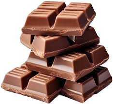

Hamsters are rodents, making them familiar to rats.
They are popular small pets.
Physically, they are stout-bodied
with distinguishing features that include elongated cheek pouches extending to their shoulders, which they use to
carry food back to their burrows, as well as a short tail and fur-covered feet.
Subtopics: Hamster History and How to take care
Ham History
Their evolutionary history is recorded by 15 extinct fossil genera and extends back 11.2 million to 16.4
million years to the Middle Miocene Epoch in Europe and North Africa; in Asia it extends 6 million to 11
million years. Four of the seven living genera include extinct species.
The name "hamster" is a loanword from the German, which itself derives from earlier Middle High German
hamastra. It is possibly related to Old Church Slavonic khomestoru, which is either a blend of the root of
Russian хомяк (khomyak) "hamster" and a Baltic word (cf. Lithuanian: staras "hamster");[9] or of Persian
origin (cf. Avestan: hamaēstar "oppressor").[10] The collective noun for a group of hamsters is "horde".[11]
In German, the verb hamstern is derived from Hamster. It means "to hoard".[12]
Living for royalty
Step 1: Living quarters
Provide a wide housing (40 x 17.5 inches per hamster)
Help the hungry Hamtaro pick out the good food.
Beware! bad food may hurt his stomach
Look at the picture and click/tap on good food for points!
Bad food reduces points
Points:

credits to everything, thanks for reaching the end